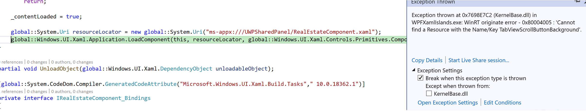

Host a custom WinRT XAML control in a WPF app using XAML Islands
Important
This topic uses or mentions types from the CommunityToolkit/Microsoft.Toolkit.Win32 GitHub repo. For important info about XAML Islands support, please see the XAML Islands Notice in that repo.
This article demonstrates how to use the WindowsXamlHost control in the Windows Community Toolkit to host a custom WinRT XAML control in a WPF app that targets .NET Core 3.1. The custom control contains several first-party controls from the Windows SDK and binds a property in one of the WinRT XAML controls to a string in the WPF app. This article also demonstrates how to also host a control from the WinUI library.
Although this article demonstrates how to do this in a WPF app, the process is similar for a Windows Forms app. For an overview about hosting WinRT XAML controls in WPF and Windows Forms apps, see this article.
Note
Using XAML Islands to host WinRT XAML controls in WPF and Windows Forms apps is currently supported only in apps that target .NET Core 3.x. XAML Islands are not yet supported in apps that target .NET, or in apps that any version of the .NET Framework.
Required components
To host a custom WinRT XAML control in a WPF (or Windows Forms) app, you'll need the following components in your solution. This article provides instructions for creating each of these components.
The project and source code for your app. Using the WindowsXamlHost control to host custom controls is supported only in apps that target .NET Core 3.x.
The custom WinRT XAML control. You'll need the source code for the custom control you want to host so you can compile it with your app. Typically, the custom control is defined in a UWP class library project that you reference in the same solution as your WPF or Windows Forms project.
A UWP app project that defines a root Application class that derives from XamlApplication. Your WPF or Windows Forms project must have access to an instance of the Microsoft.Toolkit.Win32.UI.XamlHost.XamlApplication class provided by the Windows Community Toolkit so that it can discover and load custom UWP XAML controls. The recommended way to do this is to define this object in a separate UWP app project that is part of the solution for your WPF or Windows Forms app.
Note
Your solution can contain only one project that defines a
XamlApplicationobject. All custom WinRT XAML controls in your app share the sameXamlApplicationobject. The project that defines theXamlApplicationobject must include references to all other WinRT libraries and projects that are used host to controls on the XAML Island.
Create a WPF project
Before getting started, follow these instructions to create a WPF project and configure it to host XAML Islands. If you have an existing WPF project, you can adapt these steps and code examples for your project.
Note
If you have an existing project that targets the .NET Framework, you'll need to migrate your project to .NET Core 3.1. For more information, see this blog series.
If you haven't done so already, install the latest version of the .NET Core 3.1 SDK.
In Visual Studio 2019, create a new WPF App (.NET Core) project.
Make sure package references are enabled:
- In Visual Studio, click Tools -> NuGet Package Manager -> Package Manager Settings.
- Make sure PackageReference is selected for Default package management format.
Right-click your WPF project in Solution Explorer and choose Manage NuGet Packages.
Select the Browse tab, search for the Microsoft.Toolkit.Wpf.UI.XamlHost package and install the latest stable version. This package provides everything you need to use the WindowsXamlHost control to host a WinRT XAML control, including other related NuGet packages.
Note
Windows Forms apps must use the Microsoft.Toolkit.Forms.UI.XamlHost package.
Configure your solution to target a specific platform such as x86 or x64. Custom WinRT XAML controls are not supported in projects that target Any CPU.
- In Solution Explorer, right-click the solution node and select Properties -> Configuration Properties -> Configuration Manager.
- Under Active solution platform, select New.
- In the New Solution Platform dialog, select x64 or x86 and press OK.
- Close the open dialog boxes.
Define a XamlApplication class in a UWP app project
Next, add a UWP app project to your solution and revise the default App class in this project to derive from the Microsoft.Toolkit.Win32.UI.XamlHost.XamlApplication class provided by the Windows Community Toolkit. This class supports the IXamlMetadataProvider interface, which enables your app to discover and load metadata for custom UWP XAML controls in assemblies in the current directory of your application at run time. This class also initializes the UWP XAML framework for the current thread.
In Solution Explorer, right-click the solution node and select Add -> New Project.
Add a Blank App (Universal Windows) project to your solution. Make sure the target version and minimum version are both set to Windows 10, version 1903 (Build 18362) or a later release.
In the UWP app project, install the Microsoft.Toolkit.Win32.UI.XamlApplication NuGet package (latest stable version).
Open the App.xaml file and replace the contents of this file with the following XAML. Replace
MyUWPAppwith the namespace of your UWP app project.<xaml:XamlApplication x:Class="MyUWPApp.App" xmlns="http://schemas.microsoft.com/winfx/2006/xaml/presentation" xmlns:x="http://schemas.microsoft.com/winfx/2006/xaml" xmlns:xaml="using:Microsoft.Toolkit.Win32.UI.XamlHost" xmlns:local="using:MyUWPApp"> </xaml:XamlApplication>Open the App.xaml.cs file and replace the contents of this file with the following code. Replace
MyUWPAppwith the namespace of your UWP app project.namespace MyUWPApp { public sealed partial class App : Microsoft.Toolkit.Win32.UI.XamlHost.XamlApplication { public App() { this.Initialize(); } } }Delete the MainPage.xaml file from the UWP app project.
Clean the UWP app project and then build it.
Add a reference to the UWP project in your WPF project
Specify the compatible framework version in the WPF project file.
In Solution Explorer, double-click the WPF project node to open the project file in the editor.
In the first PropertyGroup element, add the following child element. Change the
19041portion of the value as necessary to match the target and minimum OS build of the UWP project.<AssetTargetFallback>uap10.0.19041</AssetTargetFallback>When you're done, the PropertyGroup element should look similar to this.
<PropertyGroup> <OutputType>WinExe</OutputType> <TargetFramework>netcoreapp3.1</TargetFramework> <UseWPF>true</UseWPF> <Platforms>AnyCPU;x64</Platforms> <AssetTargetFallback>uap10.0.19041</AssetTargetFallback> </PropertyGroup>
In Solution Explorer, right-click the Dependencies node under the WPF project and add a reference to your UWP app project.
Instantiate the XamlApplication object in the entry point of your WPF app
Next, add code to the entry point for your WPF app to create an instance of the App class you just defined in the UWP project (this is the class that now derives from XamlApplication).
In your WPF project, right-click the project node, select Add -> New Item, and then select Class. Name the class Program and click Add.
Replace the generated
Programclass with the following code and then save the file. ReplaceMyUWPAppwith the namespace of your UWP app project, and replaceMyWPFAppwith the namespace of your WPF app project.public class Program { [System.STAThreadAttribute()] public static void Main() { using (new MyUWPApp.App()) { MyWPFApp.App app = new MyWPFApp.App(); app.InitializeComponent(); app.Run(); } } }Right-click the project node and choose Properties.
On the Application tab of the properties, click the Startup object drop-down and choose the fully qualified name of the
Programclass you added in the previous step.Note
By default, WPF projects define a
Mainentry point function in a generated code file that isn't intended to be modified. This step changes the entry point for your project to theMainmethod of the newProgramclass, which enables you to add code that runs as early in the startup process of the app as possible.Save your changes to the project properties.
Create a custom WinRT XAML control
To host a custom WinRT XAML control in your WPF app, you must have the source code for the control so you can compile it with your app. Typically custom controls are defined in a UWP class library project for easy portability.
In this section, you will define a simple custom control in a new class library project. You can alternatively define the custom control in the UWP app project you created in the previous section. However, these steps do this in a separate class library project for illustrative purposes because this is typically how custom controls are implemented for portability.
If you already have a custom control, you can use it instead of the control shown here. However, you'll still need to configure the project that contains the control as shown in these steps.
In Solution Explorer, right-click the solution node and select Add -> New Project.
Add a Class Library (Universal Windows) project to your solution. Make sure the target version and minimum version are both set to the same target and minimum OS build as the UWP project.
Right-click the project file and select Unload Project. Right-click the project file again and select Edit.
Before the closing
</Project>element, add the following XML to disable several properties and then save the project file. These properties must be enabled to host the custom control in a WPF (or Windows Forms) app.<PropertyGroup> <EnableTypeInfoReflection>false</EnableTypeInfoReflection> <EnableXBindDiagnostics>false</EnableXBindDiagnostics> </PropertyGroup>Right-click the project file and select Reload Project.
Delete the default Class1.cs file and add a new User Control item to the project.
In the XAML file for the user control, add the following
StackPanelas a child of the defaultGrid. This example adds aTextBlockcontrol and then binds theTextattribute of that control to theXamlIslandMessagefield.<StackPanel Background="LightCoral"> <TextBlock>This is a simple custom WinRT XAML control</TextBlock> <Rectangle Fill="Blue" Height="100" Width="100"/> <TextBlock Text="{x:Bind XamlIslandMessage}" FontSize="50"></TextBlock> </StackPanel>In the code-behind file for the user control, add the
XamlIslandMessagefield to the user control class as shown below.public sealed partial class MyUserControl : UserControl { public string XamlIslandMessage { get; set; } public MyUserControl() { this.InitializeComponent(); } }Build the UWP class library project.
In your WPF project, right-click the Dependencies node and add a reference to the UWP class library project.
In the UWP app project you configured earlier, right-click the References node and add a reference to the UWP class library project.
Rebuild the entire solution and make sure all the projects build successfully.
Host the custom WinRT XAML control in your WPF app
In Solution Explorer, expand the WPF project and open the MainWindow.xaml file or some other window in which you want to host the custom control.
In the XAML file, add the following namespace declaration to the
<Window>element.xmlns:xaml="clr-namespace:Microsoft.Toolkit.Wpf.UI.XamlHost;assembly=Microsoft.Toolkit.Wpf.UI.XamlHost"In the same file, add the following control to the
<Grid>element. Change theInitialTypeNameattribute to the fully qualified name of the user control in your UWP class library project.<xaml:WindowsXamlHost InitialTypeName="UWPClassLibrary.MyUserControl" ChildChanged="WindowsXamlHost_ChildChanged" />Open the code-behind file and add the following code to the
Windowclass. This code defines aChildChangedevent handler that assigns the value of theXamlIslandMessagefield of the UWP custom control to the value of theWPFMessagefield in the WPF app. ChangeUWPClassLibrary.MyUserControlto the fully qualified name of the user control in your UWP class library project.private void WindowsXamlHost_ChildChanged(object sender, EventArgs e) { // Hook up x:Bind source. global::Microsoft.Toolkit.Wpf.UI.XamlHost.WindowsXamlHost windowsXamlHost = sender as global::Microsoft.Toolkit.Wpf.UI.XamlHost.WindowsXamlHost; global::UWPClassLibrary.MyUserControl userControl = windowsXamlHost.GetUwpInternalObject() as global::UWPClassLibrary.MyUserControl; if (userControl != null) { userControl.XamlIslandMessage = this.WPFMessage; } } public string WPFMessage { get { return "Binding from WPF to UWP XAML"; } }Build and run your app and confirm that the UWP user control displays as expected.
Add a control from the WinUI 2 library to the custom control
Traditionally, WinRT XAML controls have been released as part of the Windows OS and made available to developers through the Windows SDK. The WinUI library is an alternative approach, where updated versions of WinRT XAML controls from the Windows SDK are distributed in a NuGet package that is not tied to Windows SDK releases. This library also includes new controls that aren't part of the Windows SDK and the default UWP platform.
This section demonstrates how to add a WinRT XAML control from the WinUI 2 library to your user control.
Note
Currently, XAML Islands only supports hosting controls from the WinUI 2 library. Support for hosting controls from the WinUI 3 library is coming in a later release.
In the UWP app project, install the latest release or prerelease version of the Microsoft.UI.Xaml NuGet package.
Note
If your desktop app is packaged in an MSIX package, you can use either a prerelease or release version of the Microsoft.UI.Xaml NugGet package. If your desktop app is not packaged using MSIX, you must install a prerelease version of the Microsoft.UI.Xaml NuGet package.
In the App.xaml file in this project, add the following child element to the
<xaml:XamlApplication>element.<Application.Resources> <XamlControlsResources xmlns="using:Microsoft.UI.Xaml.Controls" /> </Application.Resources>After adding this element, the contents of this file should now look similar to this.
<xaml:XamlApplication x:Class="MyUWPApp.App" xmlns="http://schemas.microsoft.com/winfx/2006/xaml/presentation" xmlns:x="http://schemas.microsoft.com/winfx/2006/xaml" xmlns:xaml="using:Microsoft.Toolkit.Win32.UI.XamlHost" xmlns:local="using:MyUWPApp"> <Application.Resources> <XamlControlsResources xmlns="using:Microsoft.UI.Xaml.Controls" /> </Application.Resources> </xaml:XamlApplication>In the UWP class library project, install the latest version of the Microsoft.UI.Xaml NuGet package (the same version that you installed in the UWP app project).
In the same project, open the XAML file for the user control and add the following namespace declaration to the
<UserControl>element.xmlns:winui="using:Microsoft.UI.Xaml.Controls"In the same file, add a
<winui:RatingControl />element as a child of the<StackPanel>. This element adds an instance of the RatingControl class from the WinUI library. After adding this element, the<StackPanel>should now look similar to this.<StackPanel Background="LightCoral"> <TextBlock>This is a simple custom WinRT XAML control</TextBlock> <Rectangle Fill="Blue" Height="100" Width="100"/> <TextBlock Text="{x:Bind XamlIslandMessage}" FontSize="50"></TextBlock> <winui:RatingControl /> </StackPanel>Build and run your app and confirm that the new rating control displays as expected.
Package the app
You can optionally package the WPF app in an MSIX package for deployment. MSIX is the modern app packaging technology for Windows, and it is based on a combination of MSI, .appx, App-V, and ClickOnce installation technologies.
The following instructions show you how to package the all the components in the solution in an MSIX package by using the Windows Application Packaging Project in Visual Studio 2019. These steps are necessary only if you want to package the WPF app in an MSIX package.
Note
If you choose to not package your application in an MSIX package for deployment, then computers that run your app must have the Visual C++ Runtime installed.
Add a new Windows Application Packaging Project to your solution. As you create the project, select the same Target version and Minimum version as you selected for the UWP project.
In the packaging project, right-click the Applications node and choose Add reference. In the list of projects, select the WPF project in your solution and click OK.
Note
If you want to publish your app in the Microsoft Store, you have to add reference to the UWP project in the packaging project.
Configure your solution to target a specific platform such as x86 or x64. This is required to build the WPF app into an MSIX package using the Windows Application Packaging Project.
- In Solution Explorer, right-click the solution node and select Properties -> Configuration Properties -> Configuration Manager.
- Under Active solution platform, select x64 or x86.
- In the row for your WPF project, in the Platform column select New.
- In the New Solution Platform dialog, select x64 or x86 (the same platform you selected for Active solution platform) and click OK.
- Close the open dialog boxes.
Build and run the packaging project. Confirm that the WPF runs and the UWP custom control displays as expected.
For info about distributing/deploying the package, see Manage your MSIX deployment.
Resolve "Cannot find a Resource" error when hosting a WinUI control
If you're hosting a custom control that contains a control from the WinUI library, you may encounter a problem where the control cannot be loaded in a packaged app and debugging the code shows the following error.

To resolve this error, copy the App.xbf file from the build output folder of the WPF project to the \AppX\<WPF project> build output folder of the packaging project.
For example, if the WPF project is named WPFXamlIslandsApp and targets x86 platform, copy App.xbf from \WPFXamlIslandsApp\bin\x86\Release\netcoreapp3.1 to \WPFXamlIslandsApp.Pack\bin\x86\Release\AppX\WPFXamlIslandsAPP.